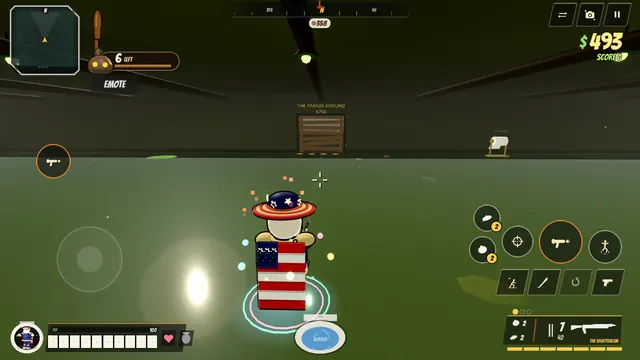
Fortress Flushenstein
The Dominion's front-line bunker.
- Gas tests fill rooms with green fog
- Alarm sirens bring trooper squads
- 3 golden seat keys open the Vault
- Boss: the Panzer Plopper
Free on Android · Early access
The stinkiest zombie shooter on your phone. Survive the horde in zombie co-op, fight online 5v5, and level up 28 ridiculous weapons.
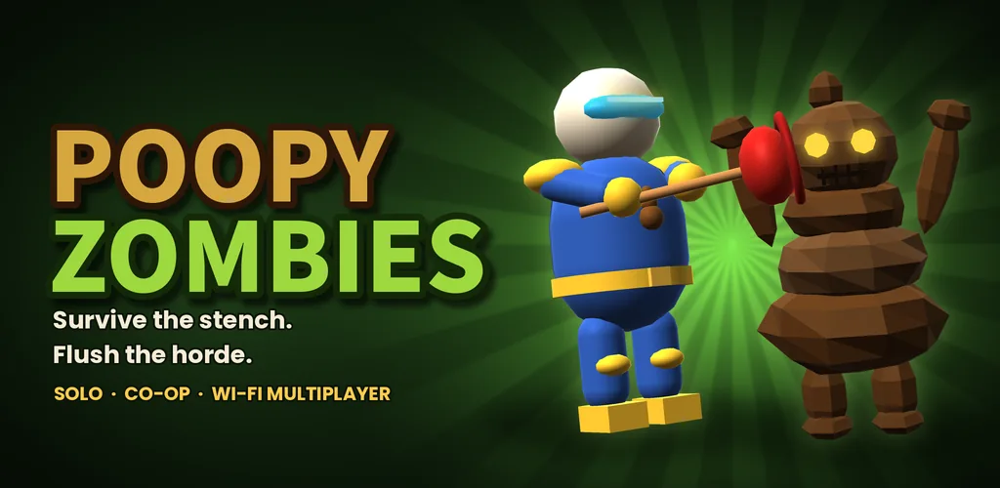
★★★★★ “GOATED. best game I've played since god of war”
Patrick P. · Google Play review
★★★★★ “very interesting fun game kid safe. highly recommended”
Mickel P. · Google Play review
★★★★★ “The game is in Turkish and it’s great, I loved it, play it and recommend it, it’s amazing!”
Salih Ö. · Google Play review, translated from Turkish
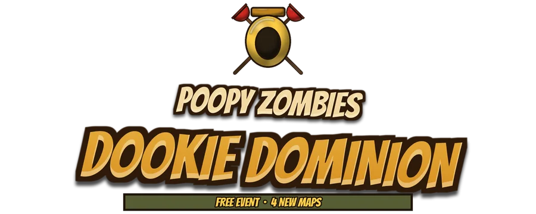
The Dookie Dominion has risen from the pipes. Field Marshal Ignatz Von Plopp fell into a tank of Brown Serum and climbed out with one dream: flush the surface world under.
The Dookie Dominion event starts Sunday, November 8, 2026 at 12:00 AM your local time and runs until December 7.
Event starts Nov 8, 2026 at 12:00 AM your local time · runs to Dec 7
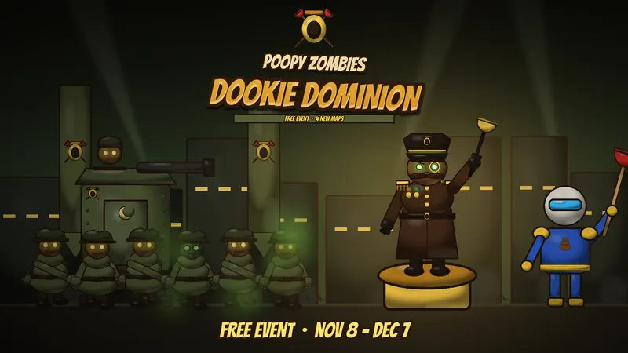
Play the Dookie Dominion campaign and its maps are yours to keep free if you play before Dec 7. Existing players keep the Heaven & Throne Pack free.

The Dominion's front-line bunker.
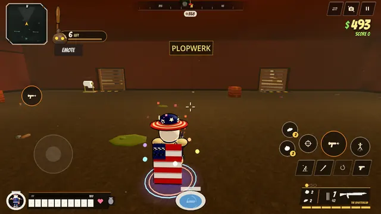
The factory that turns sewage into soldiers.
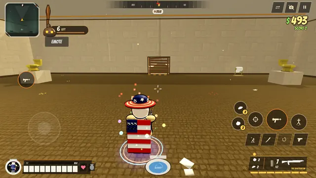
Von Plopp's palace, from the Rose Garden to the Hall of Mirrors.
The boss of Fortress Flushenstein. Find the 3 golden seat keys, open the Vault, then take it down.
Three phases: a speech, a mech suit, then the throne overflows.
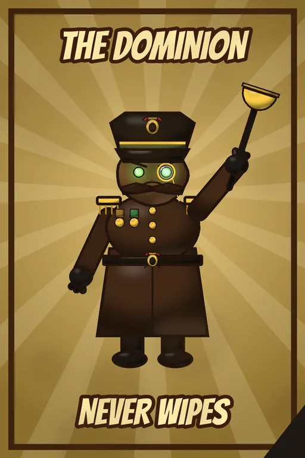
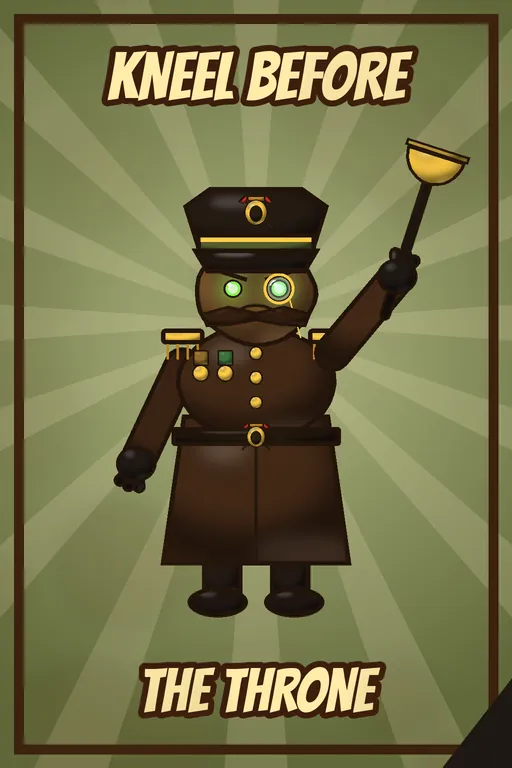
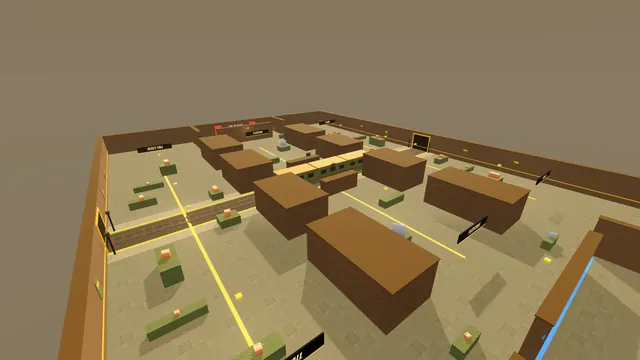
The Resistance against the Dominion, in the last metro station. When the signals flash and the horn blows, a train flushes anyone still on the tracks.
Plus new medals, hitmarkers and precise hitboxes, so headshots pay big.
Earn Golden Seats in any mode for the Dominion Trooper and Resistance Plumber skins, the Plunger Salute emote, titles and more. The event opens at 12:00 AM on Nov 8 and closes at 11:59 PM on Dec 7, your phone's local time.
Play in first person, third person or top-down.
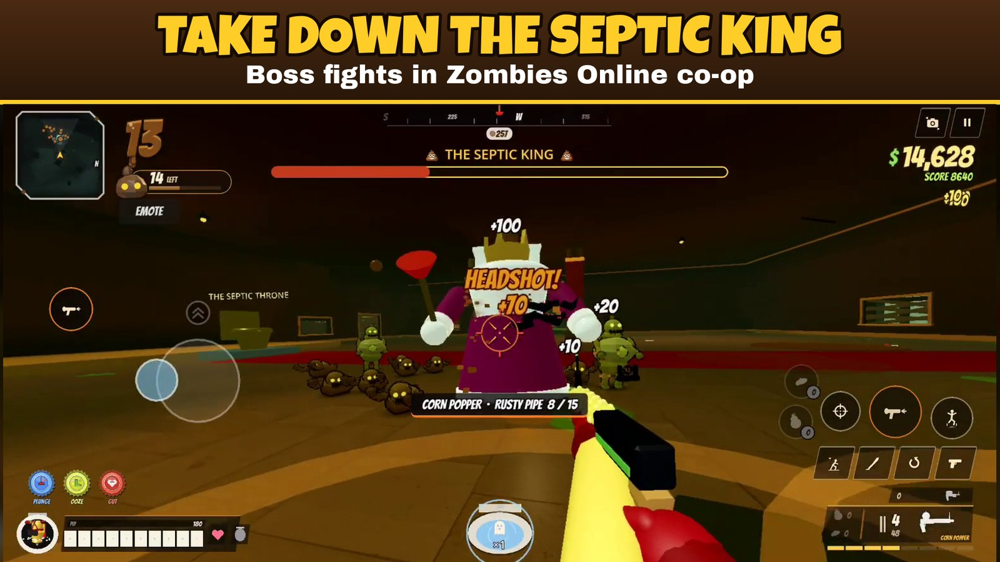
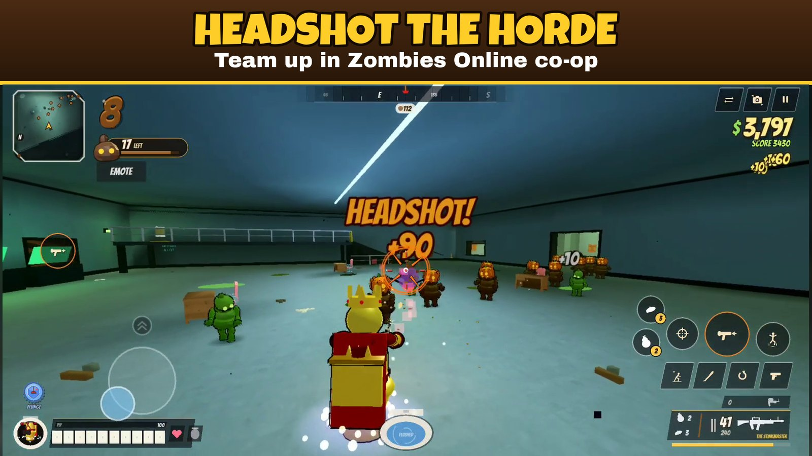
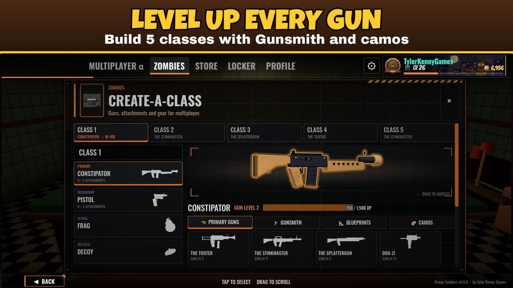
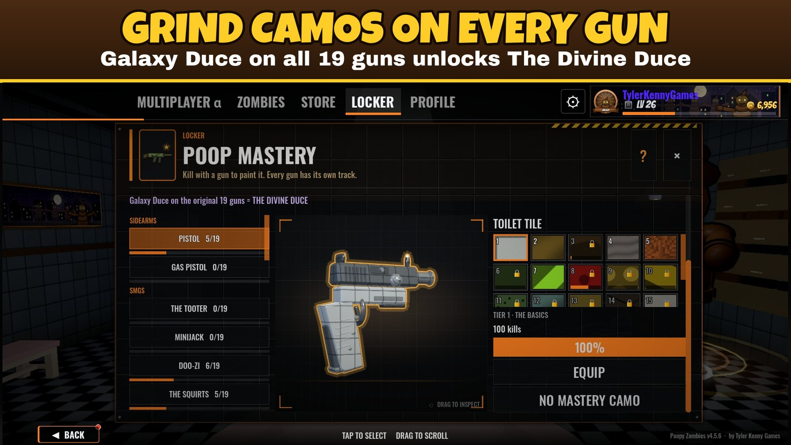
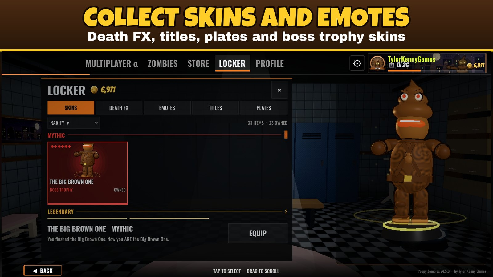
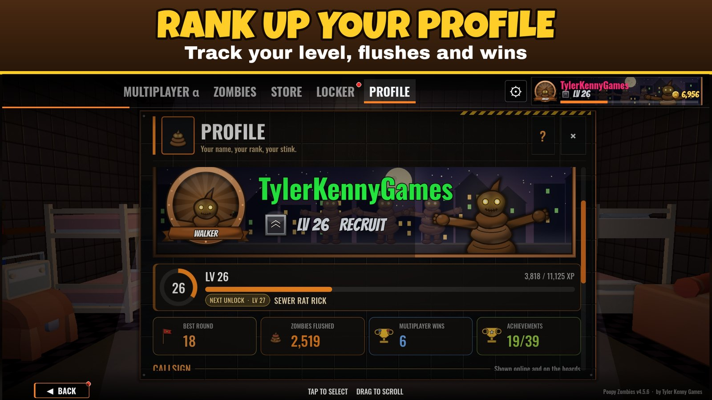
No ads. Ever.
No pop-ups, no “watch a video to continue”, no ad networks. Just you, your squad and a whole lot of zombie poop.
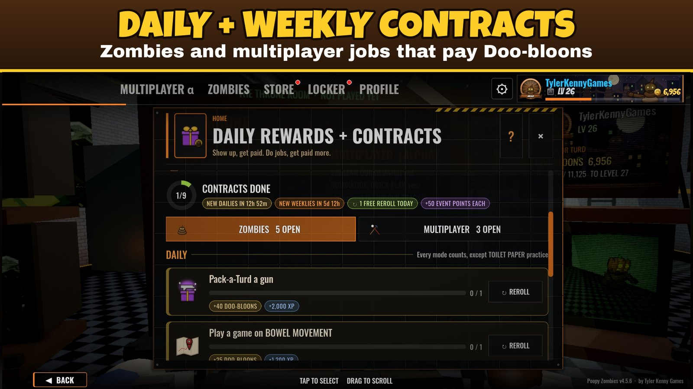
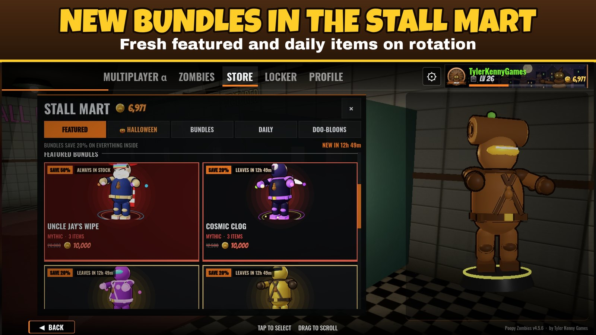
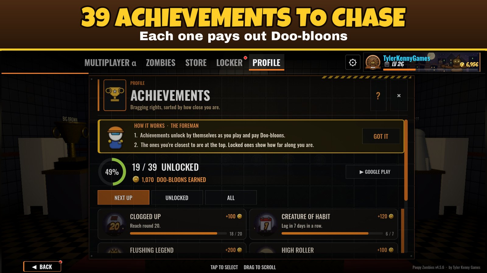
The new maps, out now.
Clips straight from the game, posted by me on TikTok. Tap to play here, or follow along for new clips.
This is an early-access alpha in active development. Updates land often, and your feedback shapes what comes next. Multiplayer and Zombies Online need an internet connection.
Made by one indie developer, Tyler Kenny Games. Found a bug or have an idea? Email tylerkennygames@gmail.com. Read the 4.5.6 devlog.
Platform: Android (7.0+)
Controls: touch, controller, or keyboard and mouse
Modes: Zombies (solo, online co-op, split screen, local Wi-Fi), online 5v5 (Team Deathmatch, Domination), Infected, Rival 1v1
Price: free to download, optional in-app purchases
Ads: none, ever
Status: Early access (multiplayer alpha)
Android package: com.poopyzombies.game